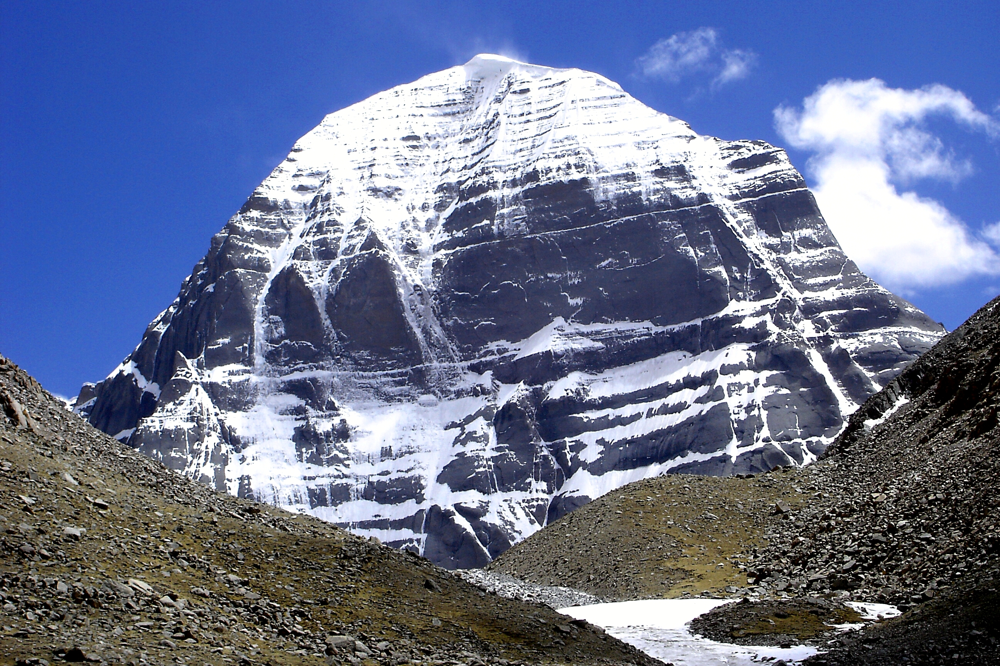
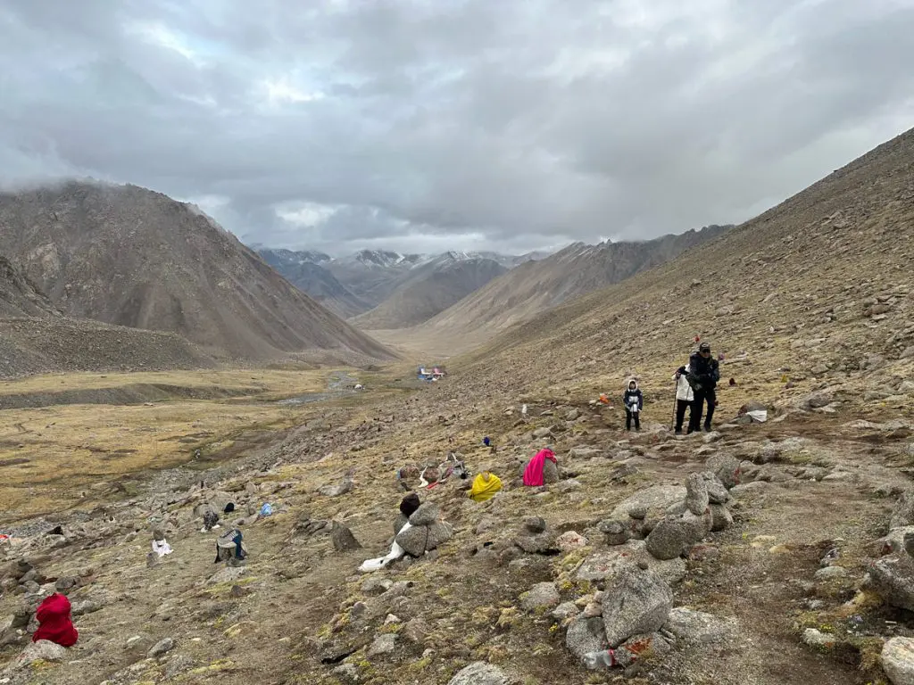
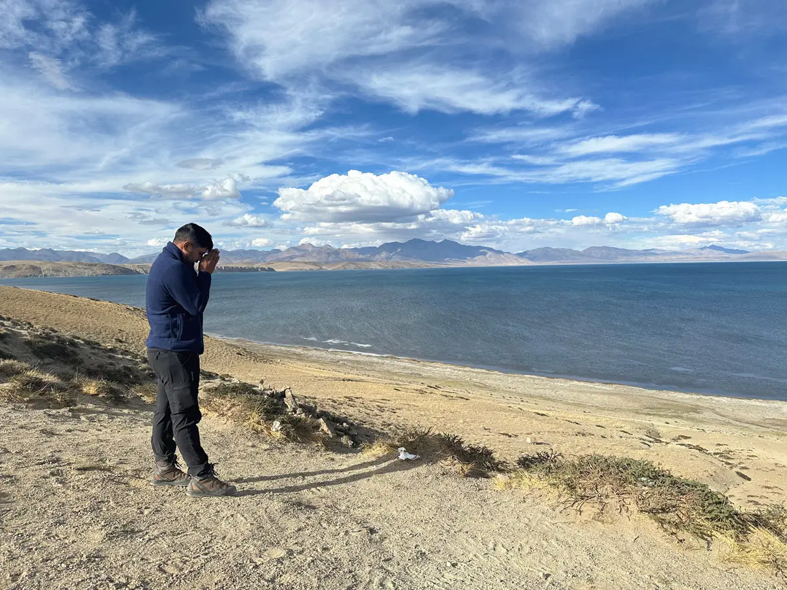

MOUNT KAILASH

Introduction
A great mass of black rock soaring to over 22,000 feet, Mount Kailash is notable for being one of the world's most venerated holy places at the same time that it is one of the least visited. The supremely sacred site of four religions and billions of people, Kailash is seen by no more than a few thousand pilgrims each year. This curious fact is explained by the mountain's remote location in far western Tibet. No planes, trains, or buses journey anywhere near the region, and even with rugged over-land vehicles, the journey still requires weeks of difficult, often dangerous travel (though this is changing as the Chinese occupiers of Tibet build roads and railways across the vast reaches of the country). The weather, always cold, can be unexpectedly treacherous, and pilgrims must carry all the supplies they will need for the entire journey.
The literal meaning of Mount Kailash is “PRECIOUS JEWEL OF THE ETERNAL SHOW”. Lying in the Tibetan range, Mount Kailash is at the axis of the Earth and is devoted to Adi Yogi Shiva and his eternal spirit mate Shakti. Mount Kailash is located near the rivers Indus,Sutlej,Brahmaputra and Karnali, and is considered to be the most sacred mountain.
Mount Kailash, regarded as the centre of the universe and recognized as the dwelling place of Lord Shiva, has emerged as a significant pilgrimage destination for Hindus, Buddhists, Jains, and Bon practitioners. Individuals with the privilege to experience its grandeur are entranced by its enchanting ambience, dramatic terrains, and pristine lakes.
Literary
Mount Kailash is renowned for its four distinct faces, each facing one of the cardinal directions—North, South, East, and West. According to the Puranas, each face is believed to be made of a different precious jewel: the North Face of gold, the South Face of lapis lazuli, the East Face of crystal, and the West Face of ruby. Each face also symbolizes different emotions and qualities. The North Face, represents divine strength and authority, reflecting a daunting and powerful emotion.

When performing the circumambulation, or Kailash Kora, around Mount Kailash, Hindus and Buddhists traditionally walk clockwise as part of their spiritual practice. On the other hand, Bon followers, the indigenous pre-Buddhist religion of Tibet, walk counterclockwise around the mountain.
The act of completing the Kora is highly significant in all traditions associated with Mount Kailash. It is believed that successfully finishing the circumambulation can cleanse a person of all sins and bring spiritual merit.
At the foot of Mount Kailash lie two significant lakes: Lake Manasarovar and Lake Rakshastal. These lakes embody the concept of yin and yang—light and darkness, good and evil. Lake Manasarovar, a sacred freshwater lake revered in Hinduism and Buddhism, is believed to have been created from the thoughts of the gods.One of the key pilgrimage activities during the Kailash Mansarovar Yatra is taking a holy bath in its crystal-clear waters. Pilgrims believe that this ritual bath can cleanse a person of all sins and bring spiritual liberation, making it an essential part of the journey for those seeking to purify themselves and gain spiritual merit
In stark contrast, Lake Rakshastal is a saltwater lake associated with demonic entities.
It is believed that a pilgrim who completes 108 journeys around the mountain is assured enlightenment. Most pilgrims to Mount Kailash will also take a short plunge in nearby sacred Lake Manosaravar. The word 'manas' means mind or consciousness; the name Manosaravar means Lake of Consciousness and Enlightenment. Adjacent to Manosaravar is Rakas Tal or Rakshas, the Lake of Demons. Pilgrimage to this great sacred mountain and these two magical lakes is a life changing experience and an opportunity to view some of the most magical scenery on the planet.

a Russian climber gives an explanation to not being able to finish the summit which will stun you - “When we approached the foot of the mountain, my heart was pounding. I was in front of the sacred mountain, Mount which says it cannot be beat. I felt extremely emaciated and suddenly I became captivated by the thought that I do not belong on this mountain, it must necessarily come back! As soon as we started the descent, I felt liberated.”
Looking at mount kailash from a geological perspective raises more questions than answers. unlike naturally occurring peaks, kailash has an almost perfectly symmetrical structure, with four nearly perpendicular faces aligned precisely with the cardinal directions and depicts differnt colors-the north is gold, the south is lapis lazuli, the east is crystal, and the west is ruby. this has led some researchers to suggest that it may not be a mountain at all, but a colossal, ancient pyramid buried beneath the earth.
Mount Kailash is believed to be linked to the legendary underground cities of Shambhala and Agartha—two ancient branches of human civilization. Shambhala, a mythical realm, is said to exist between the Himalayas and the Gobi Desert, embodying enlightenment and peace. Tibetan legends suggest that Siddhas and ascetics still reside in this secret city, deepening the mountain’s spiritual aura.Some believe Mount Kailash conceals hidden tunnels or an advanced energy field, possibly serving as a gateway to a higher dimension. These mysteries continue to captivate seekers, adding to Kailash’s enigmatic and sacred appeal.
pyramid
Some Russian scientists have studied the mountain to a great extent and have put forward an idea that Mount Kailash could be a man-made pyramid, and might be the ultimate paranormal phenomenon that connects all the other such monuments in the world where similar things have been observed. It is believed to be the centre of this world-wide system. Mount Kailash is the greatest mystical library
A pyramid in the himalayas? archaeologists have discovered that pyramidal structures exist all over the world, from egypt to mexico, bosnia to china. some speculate that these pyramids were built by an ancient civilization with advanced knowledge of energy harnessing, could mount kailash be one of these structures-perhaps even the largest and oldest pyramid on earth? the peculiar characteristics of kailash support this theory: geometric precision: unlike natural mountains, kailash's structure is too symmetrical to be a result of erosion. magnetic anomalies: compasses spin erratically near the mountain, and electronic devices malfunction. ancient texts mentioning a "golden city": some hindu scriptures describe a celestial city near kailash, possibly buried beneath the mountain. if kailash is indeed a pyramid who built it and why?
Some conspiracy theorists believe that Mount Kailash is not a natural formation, but rather an ancient pyramid built by inhabitants of an advanced civilization (such as Atlantis).
Indian and Chinese blogs (in the 1990s – after some areas of Tibet were opened to tourism) published stories claiming that Mount Kailash is part of a "pyramid network" extending from Tibet to Egypt and Mexico. They argued that the "magnetic field" around it is evidence that it is an ancient energy center.
Some online posts claim that the mountain is "the largest pyramid on Earth" and "the mother of all pyramids".
The center of the planetary pyramid network: Mount Kailash is located on the same line as the Pyramids of Giza, Teotihuacan (Mexico), and the Bosnian pyramids.
Acceleration Of Time
A particularly intriguing phenomenon reported by both scientists and pilgrims in the vicinity of Mount Kailash is the accelerated aging experienced by those who spend time near the sacred peak. Remarkably, it has been observed that spending just 12 hours in the vicinity of the mountain can cause hair and nails to grow as much as they would over two weeks under normal conditions. This rapid growth rate has captivated researchers and visitors alike, leading to various theories about its underlying cause.
The Russian scholar Ernst Muldashev wrote that the area around Mount Kailash creates a "time distortion," and claimed that the hair and fingernails of pilgrims grow excessively fast due to an unexplained magnetic/energy field.
Some travelers claim that those who approach Mount Kailash closely experience time passing either faster or slower than usual. There are even stories that suggest that 12 hours spent near the mountain can feel like two weeks elsewhere.
Physical Phenomenon
Some Chinese research teams detected slight fluctuations in the magnetic field around the mountain, but they attributed this to the nature of the crystalline granite rock, which contains magnetic minerals.
Hindu and Buddhist thinkers believe that "magnetic energy" is not merely a physical phenomenon, but rather a symbol representing the mountain as a center of cosmic energy (a chakra of the Earth). They explain compass fluctuations as a result of the flow of "prana energy" or "cosmic energy."
Some Tibetan thinkers have likened Mount Kailash to "the beating heart of the Earth," which radiates spiritual energy.
Bloggers on forums like Reddit or Quora have speculated that Mount Kailash might be a "massive artificial pyramid" and therefore acts as a natural magnet or a source of energy.
Some conspiracy theorists believe that Mount Kailash is not a natural formation, but rather an ancient pyramid built by inhabitants of an advanced civilization (such as Atlantis).
Some pseudo-scientific researchers believe that Mount Kailash is located at the intersection of planetary energy lines (similar to the Greenwich Meridian), which explains why it appears to be a magnetic center.
Hindus
Hindus who worship Lord Shiva believe that Mount Kailash is the residence of Lord Shiva, who is said to have resided there with his consort Parvati and his two children, Ganesha and Kartikeya. In Hindu mythology, Mount Kailash is also known as "Meru," and it is believed that Lord Shiva sits on top of this mountain in the lotus pose, considered the centre of the universe.
Buddhists
Mount Kailash is associated with Buddha Demchok in Buddhism, representing the pinnacle of bliss. The pilgrimage to Kailash is regarded as a journey toward enlightenment and self-realization. Buddhists assert that circumambulating the mountain may reduce negative karma and bring blessings for the present life and the afterlife. Kailash is an outstanding location for meditation and reflection due to its calm and secluded environment.
Bon is an ancient form of Buddhism in Tibet that predates contemporary Buddhism. Bon Buddhism thrived in the ancient kingdom of Zhang Zhung, which had existed in 500 BCE in Western Tibet. Mount Kailash, a place where Bon religion and culture thrived, served as the center of the Zhang Zhung empire. Furthermore, Bonpos believe that Mount Kailash houses the goddess "Sipaimen" or "Sipe Gyalmo," revered as the Queen of the World. The Bon Buddhist faith regards "Sipe Gyalmo" as both a meditational deity and a guardian deity. Her appearance is fierce, but she is brimming with love. She embodies a deep understanding and kindness. Kailash holds the highest reverence in Bon religion, serving as the ultimate pilgrimage destination.
Mount Kailash holds profound esteem among Jains, who view it as a location of considerable spiritual importance. Kailash is of considerable significance to Jains, as it is associated with Adinath (Rishavdev), the inaugural Tirthankara, who attained nirvana at this site. Pilgrims undertake the pilgrimage to Kailash to honour Adinath and pursue spiritual enlightenment. The diverse religious beliefs associated with Kailash Mansarovar significantly enrich its cultural heritage and spiritual traditions.
Jains
Jains call the mountain Astapada and believe it to be where Rishaba, the first of the twenty-four Tirthankaras, attained liberation.
Some Jain texts state that ancient kings (particularly during a legendary era known as the Bharata Chakravartin era) built stone palaces and shrines on the summit of Ashtapada in honor of Rishabhanath.
Bon
Followers of Bon, Tibet's pre-Buddhist, shamanistic religion, call the mountain Tise and believe it to be the seat of the Sky Goddess Sipaimen. Additionally, Bon myths regard Tise as the sight of a legendary 12th-century battle of sorcery between the Buddhist sage Milarepa and the Bon shaman Naro Bon-chung. Milarepa's defeat of the shaman displaced Bon as the primary religion of Tibet, firmly establishing Buddhism in its place
The Bon religious text describes Mount Kailash as "the mountain of the sun and moon," where the cosmic energy lines intersect. It is considered a place of cosmic harmony and a site of spiritual enlightenment for pilgrims.
Maintains that the entire mystical region and Kailash, which adherents call the "nine-story Swastika Mountain", is the axis mundi, Tagzig Olmo Lung Ring.
Some contemporary Pohnpeian texts mention that the mountain is a source of cosmic magnetic energy, but ancient texts do not mention any magnetic field in the scientific sense.
Research
Mount Kailash’s symmetrical, pyramid-like shape and alignment with sacred sites around the world have long fascinated scientists and geographers. Notably, the distance from Stonehenge in the UK to Mount Kailash is precisely 6,666 kilometers, which is also the distance to the North Pole. Astonishingly, the distance to the South Pole is 13,332 kilometers, exactly twice the distance to Stonehenge or the North Pole.
Mount Kailash remains one of the few major peaks in the world that has never been climbed, despite its relatively moderate height of 6,638 meters (21,778 feet), compared to other towering Himalayan mountains. The reason for this is not the physical challenge, but the profound spiritual significance it holds for millions of people. For centuries, the sanctity of Mount Kailash has deterred climbers, and even modern mountaineering expeditions have avoided attempts out of respect for its religious importance. In 2001, China officially banned all climbing attempts, further solidifying its status as an unclimbed and untouchable peak.
Mount Kailash is the source of four of Asia’s major rivers: the Indus, the Brahmaputra, the Karnali (a tributary of the Ganges), and the Sutlej. These rivers flow in different directions from the mountain, providing essential water and sustenance to millions of people across Asia. Each river supports diverse ecosystems and communities, highlighting Mount Kailash’s critical role in both spiritual and physical nourishment.